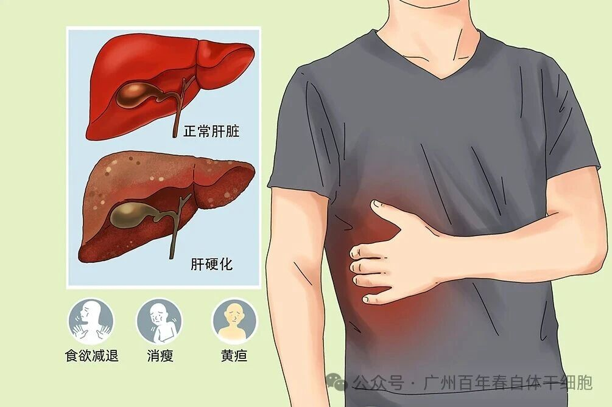
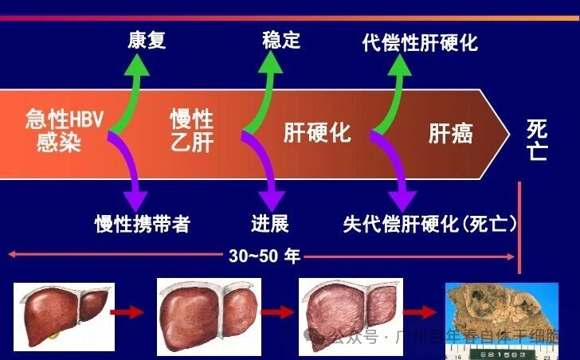
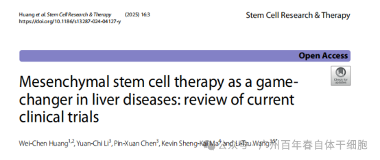
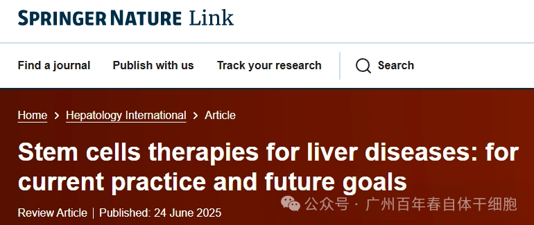

别等身体亮红灯！百年春自体干细胞，为您定制细胞级抗衰防线
2026-03-04

About Us
关于百年春
肝脏，作为人体内默默工作的“化学工厂”，一旦受损，其修复能力有限，传统治疗常面临瓶颈。干细胞疗法正成为突破这一困境的前沿选择，通过多机制协同作用，为肝功能损伤修复带来新希望。
01、沉默的肝硬化
肝硬化是一种慢性进行性肝脏疾病，本质是肝脏长期遭受损伤后的异常修复过程。当病毒性肝炎、酒精性肝病、非酒精性脂肪性肝病等病因持续存在时，肝脏会启动过度纤维化反应，导致正常肝细胞被瘢痕组织（纤维组织）替代，最终形成坚硬、结节状的肝脏结构。这一过程通常不可逆，并伴随以下特征：

功能损害：肝脏的解毒、代谢、合成（如凝血因子）能力显著下降，引发黄疸、腹水、凝血障碍等症状。
并发症风险：门静脉高压可导致食管胃底静脉曲张破裂出血（消化道大出血），肝性脑病（意识障碍），甚至肝癌。
隐匿性进展：早期肝脏代偿能力强，患者可能仅表现为乏力、食欲减退等非特异性症状，易被忽视；多数患者确诊时已进入失代偿期，治疗难度大幅增加。
02、传统治疗的局限：延缓而非逆转
病因治疗：抗病毒药物（如乙肝病毒抑制剂）、戒酒、控制代谢综合征等可延缓病程，但无法逆转纤维化。
对症治疗：利尿剂缓解腹水、内镜止血治疗食管静脉曲张等，仅针对并发症，不改善肝脏结构。
肝移植困境：虽为终末期患者的终极解决方案，但面临供体短缺、手术费用高昂（数十万元）、术后免疫排斥及感染风险等挑战。

03、自体干细胞治疗：重塑肝脏的“再生密码”
针对肝脏损伤百年春提供了自体造血干细胞、自体间充质干细胞、自体肝脏干细胞的保健方案，满足个性化保健需求。
干细胞治疗肝硬化的核心思路，是通过移植具有再生能力的干细胞，帮助修复受损的肝组织、抑制纤维化进展，并促进肝脏功能的恢复。其作用机制多样，主要包括：
直接分化替代：在肝脏损伤微环境的引导下，干细胞能够定植并分化为功能性肝细胞，直接补充受损的细胞群。
旁分泌效应：干细胞可分泌多种生长因子、细胞因子等信号物质，调节局部免疫反应，减轻炎症，激活内源性肝细胞增殖。
抗纤维化作用：通过分泌基质金属蛋白酶等物质，降解过度沉积的细胞外基质，从而减缓甚至逆转肝纤维化进程。
免疫调节功能：干细胞能调节机体免疫状态，抑制过度免疫反应对肝脏的持续攻击，为肝脏修复创造有利环境。
这些机制共同作用，使得干细胞不仅能“补细胞”，还能“改环境”，实现从结构到功能的系统性修复。
04、临床突破：从实验室到病床的跨越
干细胞在逆转肝损伤、改善肝功能和为对常规疗法没有反应的患者带来希望
2025年1月6日，美国宾夕法尼亚大学佩雷尔曼医学院全球健康中心和中国台湾省台北医学大学医学科技学院的团队在行业期刊Stem Cell Res Ther上在线发表了题为《间充质干细胞疗法有望改变肝病治疗格局：当前临床试验回顾》的综述报告。

该综述深入探讨了当前临床试验中强调的基于MSC的慢性和终末期肝病治疗的最新进展。
干细胞在逆转肝损伤、改善肝功能方面表现出潜力，并为对常规疗法无效的患者带来希望。
当通过肝静脉、门静脉或外周静脉给药时，MSC可显著改善肝脏组织学、减少纤维化并恢复功能能力。
解放军第五医学中心研究综述指出，干细胞治疗肝病具有良好的安全性
解放军301医院第五医学中心感染科在国际权威期刊杂志《Hepatology International》上发表了一项“干细胞治疗肝病：当前临床进展与未来目标”的文献综述。

综述表明：截至2025年3月31日，已有110多项研究干细胞疗法治疗慢性肝病的临床试验注册，主要处于I期和II期阶段。干细胞疗法在治疗肝病方面具有良好的安全性。同时，新出现的证据也凸显了干细胞疗法在提高患者存活率和促进肝功能恢复方面的初步疗效。
05 、从“不可逆转”到“可修复”
干细胞治疗正推动肝硬化治疗进入新时代。正如诺贝尔奖得主山中伸弥所言：“干细胞不是魔法，而是科学。”随着技术迭代，我们正逐步接近“逆转肝硬化”的医学梦想，为患者带来从结构到功能全面修复的希望。